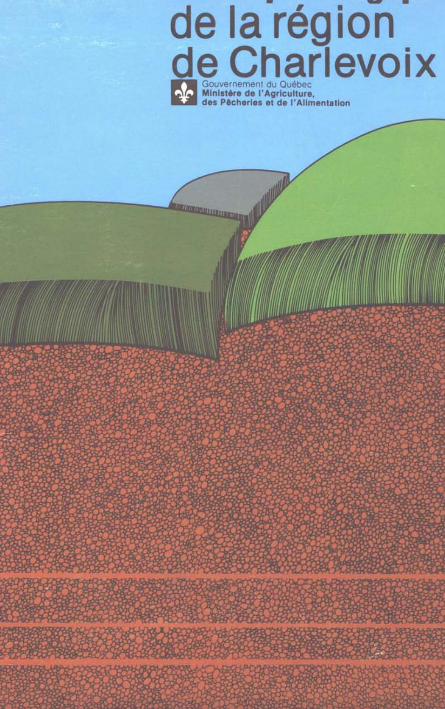

Identification & Caractéristiques Générales
La série Charlevoix se développe sur des dépôts meubles quaternaires de type till morainique profond, généralement supérieur à un mètre, reposant parfois sur des formations fluvio-glaciaires sous-jacentes. Ce matériau parental est associé aux zones de plateau à relief plus doux ainsi qu'aux secteurs montueux et fortement vallonnés. Sur le plan géomorphologique, cette série occupe principalement les points les plus élevés du paysage, de même que les pentes douces à modérées variant généralement de 5 à 15 %. La topographie impose un ruissellement de surface lent à moyen, tandis que la position physiographique conditionne l'évolution pédogénétique de ces sols minéraux au sein de la région.
Sur le plan morphologique, le profil pédologique présente une texture dominante de loam sableux, associée à une charge en fragments grossiers oscillant entre 20 et 40 %, constituée principalement de graviers ainsi que de cailloux et de pierres en proportion moindre. La réaction du sol (pH) est généralement acide. Le drainage naturel est caractérisé comme bon à modérément bon, bien que des secteurs à drainage excessif aux sommets des pentes ou modérément bon en position intermédiaire soient cartographiés localement. La perméabilité interne est moyenne, mais les horizons sous-jacents (B et C) manifestent une compacité marquée, souvent qualifiée de fragile (horizon Cx). En surface, les profils cultivés montrent fréquemment des perturbations mécaniques prononcées attribuables aux travaux d'épierrement répétés, se traduisant par un horizon Ae discontinu ou réduit à l'état de traces sous l'horizon de labour, au-dessus des horizons spodiques (Bf) ou brunisoliques (Bm) caractéristiques.
Agronomiquement, les sols de la série Charlevoix offrent des aptitudes modérées pour la production agricole, étant exploités pour les grandes cultures, les cultures fourragères et le pâturage, les superficies excédentaires étant occupées par le couvert forestier. Les principales contraintes à la mise en valeur résident dans la pierrosité importante nécessitant des interventions d'épierrement, la compacité en profondeur (horizon subsurfacique dense) qui restreint la percolation verticale et l'enracinement profond, ainsi que l'acidité naturelle inhérente. La mise en culture de ces sols requiert un programme régulier de chaulage pour neutraliser l'acidité, un travail cultural adapté pour briser la compacité relative des sous-sols, ainsi qu'une gestion rigoureuse des pierres et du contrôle de l'érosion hydrique sur les pentes, bien que la nécessité d'un drainage souterrain artificiel y soit généralement secondaire comparativement aux sols de texture fine des basses terres.
Classification Taxonomique & Environnement Pédologique
| Ordre Pédologique | Podzolique |
|---|---|
| Grand Groupe (SCSS) | Podzol humo-ferrique |
| Sous-Groupe Taxonomique | Podzol humo-ferrique orthique |
| Famille Pédologique | Loameuse-grossière, mixte sableux, acide |
| Mode de Dépôt Parental | Morainique |
| Classe de Drainage Naturel | Bien drainé |
| Régime Thermique & Humidité | Frais / Subhumide |
Description Morphologique du Profil Type
Séquences génétiques des horizons pédologiques caractérisant le profil type représentatif de la série Charlevoix :
Profil cultivé (agricole) — Comté de Charlevoix
✓ Source : Comté de Charlevoix — Page 24Couleur Munsell : 10YR 4/4
Structure & Consistance : Polyédrique à granulaire
Description morphologique : Loam sabio-caillouteux * ; brun-jaune foncé (10 YR 4/4 h); particulaire; très friable; fortement acide.
Couleur Munsell : 10YR 5/8
Structure & Consistance : Polyédrique à granulaire
Description morphologique : Loam sableux; brun-jaune (10 YR 5/8 h); particulaire; meuble; présence de cailloux anguleux et de graviers; limite distincte, ondulée; fortement acide.
Couleur Munsell : 10YR 6/4
Structure & Consistance : Polyédrique à granulaire
Description morphologique : Loam sableux; brun-jaune clair (10 YR 6/4 h); particulaire; meuble; cailloux anguleux et graviers assez abondants; limite distincte, régulière; fortement acide.
Couleur Munsell : 10YR 5/1
Structure & Consistance : Polyédrique à granulaire
Description morphologique : Loam sableux fin; gris à gris-brun (10 YR 5/1-5/2 h); marbrures peu nombreuses, petites, faibles; cailloux anguleux et graviers assez abondants; horizon compact et d'apparence cimentée; fortement acide.
Couleur Munsell : Non précisée
Structure & Consistance : Polyédrique à granulaire
Description morphologique : Matière organique peu décomposée (surtout des aiguilles de résineux); extrêmement acide.
Couleur Munsell : Non précisée
Structure & Consistance : Polyédrique à granulaire
Description morphologique : Matière organique bien décomposée, noire; extrêmement acide.
Couleur Munsell : 5YR 7/1
Structure & Consistance : Polyédrique à granulaire
Description morphologique : Sable loameux; gris clair à blanc (5 YR 7/1-8/1 h); présence de matière organique bien décomposée; particulaire; meuble; limite abrupte, ondulée; extrêmement acide.
Couleur Munsell : 5YR 3/2
Structure & Consistance : Polyédrique à granulaire
Description morphologique : Loam sableux; rouge sombre à brun-rouge foncé (2,5 YR 3/2-3/4 h); cailloux anguleux et graviers assez abondants; limite distincte, ondulée; très fortement acide.
Couleur Munsell : 10YR 5/6
Structure & Consistance : Polyédrique à granulaire
Description morphologique : Loam sableux; brun-jaune (10 YR 5/6 h); particulaire; meuble; présence de cailloux anguleux et graviers; limite graduelle, régulière; fortement acide.
Couleur Munsell : 10YR 5/3
Structure & Consistance : Polyédrique à granulaire
Description morphologique : Loam sableux; brun (10 YR 5/3 h); particulaire; meuble; présence de cailloux anguleux et graviers; limite graduelle, régulière; fortement acide.
Couleur Munsell : 5Y 5/2
Structure & Consistance : Polyédrique à granulaire
Description morphologique : Sable loameux; brun-gris à olive clair (2,5 Y 5/2-5/4 h); marbrures peu nombreuses, petites, faibles; présence de cailloux anguleux et graviers; horizon compact et d'apparence cimentée; fortement acide.
Profil cultivé (agricole) — Les terres cultivées de la MRC d
✓ Source : Les terres cultivées de la MRC d — Page 23Couleur Munsell : 10YR 3/2, 2.5Y 5/3
Structure & Consistance : Polyédrique à granulaire
Description morphologique : Loam sableux 2 ; brun gris foncé (10 YR 3/2 h), brun olive clair (2.5 Y 5/3 s); granulaire, fine à moyenne, modérée; très friable; racines très abondantes, toutes les grosseurs; fragments grossiers, graveleux, caillouteux et pierreux, 10 à 20%; limite nette, régulière; épaisseur de 12 à 20 cm; modérément acide.
Couleur Munsell : 10YR 4/4, 2.5Y 5.5/4
Structure & Consistance : Polyédrique à granulaire
Description morphologique : Loam sableux fin; brun jaune foncé (10 YR 4/4 h), brun olive clair à brun jaune clair (2.5 Y 5.5/4 s); granulaire, fine à moyenne, modérée; très friable; racines abondantes, toutes les grosseurs; fragments grossiers graveleux, caillouteux et pierreux, 10 à 20%; limite graduelle, ondulée; épaisseur de 10 à 20 cm; modérément acide.
Couleur Munsell : 10YR 5/3, 2.5Y 5/3, 2.5Y 6/2
Structure & Consistance : Polyédrique à granulaire
Description morphologique : Loam sableux; brun (10 YR 5/3 h) brun olive clair (2.5 Y 5/3 h), gris brun clair (2.5 Y 6/2 s); granulaire, grossière et moyenne, faible et polyédrique subangulaire, moyenne très faible; friable à très ferme; racines abondantes, toutes les grosseurs; fragments grossiers graveleux, caillouteux et pierreux, 10 à 20%; limite graduelle, régulière; épaisseur de 11 à 12 cm; modérément acide.
Couleur Munsell : 2.5Y 4/2.5, 5Y 4/2, 2.5Y 6.5/2
Structure & Consistance : Et pseudo- stratifiée
Description morphologique : Sable loameux graveleux caillouteux; brun gris foncé à brun olive (2.5 Y 4/2.5 h) et gris olive (5 Y 4/2 h), gris olive clair à gris clair (2.5 Y 6.5/2 s); massive (en place), sans structure et pseudo- stratifiée; très ferme; fragments grossiers graveleux, caillouteux et pierreux, 20 à 30%; modérément acide.
Profils Photographiques & Planches de Terrain
Documents iconographiques, figures pédologiques et coupes de terrain documentées dans les mémoires d'inventaire pour de la série Charlevoix :

Propriétés Physico-Chimiques & Analyses de Laboratoire
| Horizon | Prof. limite | pH (H₂O) | M.O. % | C tot. % | N tot. % | C.E.C. (cmol/kg) | Sable % | Limon % | Argile % | P Meh3 (mg/kg) | K (cmol/kg) | Ca (cmol/kg) | MVA (g/cm³) |
|---|---|---|---|---|---|---|---|---|---|---|---|---|---|
| Ap1 | 10.0 cm | 5.9 | 7.82 | 4.54 | 0.35 | 21.2 | 60.1 | 28.8 | 11.2 | 23.8 | 0.2 | 5.25 | 1.01 |
| Ap2 | 21.0 cm | 5.82 | 6.09 | 3.53 | 0.25 | 18.0 | 62.3 | 27.0 | 10.6 | 11.8 | 0.09 | 3.3 | 1.11 |
| B | — | 6.0 | 3.71 | 2.15 | 0.14 | 15.0 | 66.5 | 24.7 | 8.8 | 10.5 | 0.06 | 2.13 | 1.15 |
Particularités Régionales, Phases & Variantes Pédologiques
Déclinaisons régionales, faciès texturaux, phases d'érosion ou de pierrosité et variantes cartographiées par étude pour de la série Charlevoix :
| Étude Régionale | Symbole | Appellation / Phase / Variante | Différenciation avec la série type (Analyse pédologique) |
|---|---|---|---|
| Comté de Charlevoix | Cha |
Charlevoix loam sableux caillouteux | Modalité modale de référence (type de base de la série). |
| MRC de la Côte-de-Beaupré | CH |
Charlevoix loam sableux | Conforme à la série type de référence (caractéristiques texturales et drainage identiques). |
| Les terres cultivées de la MRC d | CVX |
Charlevoix | Conforme à la série type de référence (caractéristiques texturales et drainage identiques). |
Distribution Pédo-Paysagère & Représentativité Cartographique (Couverture PPS 2026)
- La Mare loam sableux caillouteux (LMA) — co-occurrente dans 524 polygone(s)
- Cassien terrain (CSN) — co-occurrente dans 310 polygone(s)
- Hilarion sable loameux à sable fin (HIL) — co-occurrente dans 174 polygone(s)
Aptitudes Agronomiques, Hydropédologie & Conservation des Sols
Indicateurs Hydropédologiques & Vulnérabilité à l'Érosion (BDHP 2026)
Interprétation BDHP : Potentiel de ruissellement modérément faible. Infiltration modérée avec textures moyennes à modérément grossières.
Classement selon l'Inventaire des Terres du Canada (ITC / CLI) : Classe 1.
- Potentiel agricole : Terroir adapté aux cultures régionales selon la texture dominante et la régie de drainage.
- Contraintes majeures : Bien drainé. Risque d'engorgement temporaire ou d'excès d'eau printanier.
- Gestion & Aménagement : Drainage souterrain ou superficiel préconisé sur les terres planes. Chaulage et apport organique régulier selon les bilans agronomiques.
- Cultures adaptées : Grandes cultures (maïs, soya, céréales), prairies fourragères et cultures maraîchères selon le contexte géomorphologique.